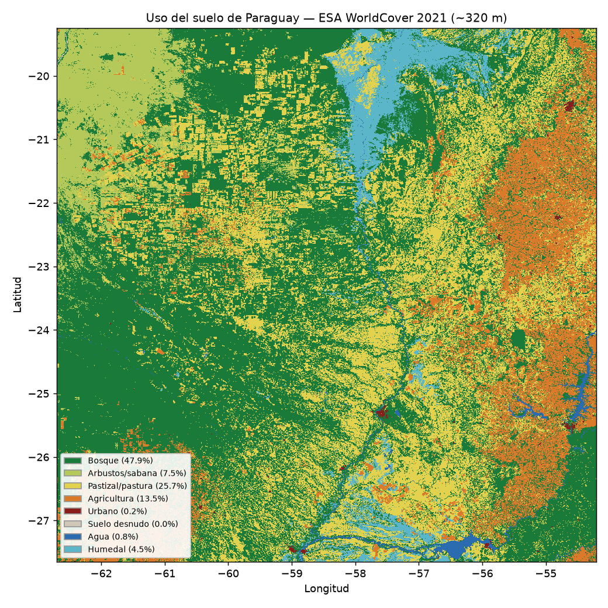

| Cobertura | % del país |
|---|---|
| Bosque | 47.9 % |
| Pastizal/pastura | 25.7 % |
| Agricultura | 13.5 % |
| Arbustos/sabana | 7.5 % |
| Humedal | 4.5 % |
| Agua | 0.8 % |
| Urbano | 0.2 % |
| Suelo desnudo | 0.0 % |
Agricultura y ganadería
Medios de vida en todas sus escalas y su exposición diferencial a las amenazas
La agricultura y la ganadería son el medio de vida de cientos de miles de familias paraguayas y, a la vez, el eje de la economía exportadora. Pero no todas las escalas están igual de expuestas a las amenazas: la misma sequía o inundación que el agronegocio absorbe con capital, riego y seguros puede liquidar a la agricultura familiar y a la ganadería de subsistencia. Analizar el agro “en todas sus escalas” es, por eso, analizar cómo se construye socialmente la vulnerabilidad.
ImportanteEl dato en disputa
Las cifras del Censo Agropecuario Nacional 2022 (CAN 2022) son la fuente principal, pero sus resultados fueron cuestionados públicamente por organizaciones campesinas y de investigación (Heñói, BASE-IS) por inconsistencias y demoras (Heñói — Centro de Estudios y Promoción de la Democracia, los DDHH y la Sostenibilidad, 2023). La producción del dato estadístico es, en sí, un terreno en disputa —algo que un enfoque crítico del riesgo no puede ignorar—.
Estructura agraria: muchas fincas, poca tierra
El CAN 2022 relevó 291.497 fincas productivas sobre 30,4 millones de hectáreas oficial (Ministerio de Agricultura y Ganadería (MAG) — DCEA / FAO, 2023). Su distribución revela una estructura bimodal —una masa de fincas campesinas y una élite latifundista—:
| Escala | Fincas | Tierra |
|---|---|---|
| Agricultura familiar (89% de las fincas) | ~259.188 | ~2,5 millones de ha (~8%) |
| Gran propiedad (0,07% de propietarios) | ~182 | >12 millones de ha (~40%) |
El índice de Gini de la tierra es 0,97 —una de las distribuciones más desiguales del mundo, prácticamente sin cambios entre 2008 y 2022— académico (Pereira Cardozo & Solís, 2024). El 38 % de las fincas familiares están encabezadas por mujeres (MarketData, 2023). Entre censos, cuatro rubros de exportación (soja, trigo, maíz, arroz) pasaron de ocupar el 84 % al 93 % de la superficie cultivada, desplazando a los cultivos de autoconsumo (Pereira Cardozo & Solís, 2024).
Agricultura por rubro y escala
El agronegocio (exportación). La soja es el cultivo insignia: ~3,6 millones de ha y ~10 millones de toneladas en la zafra 2024/25, con un complejo sojero que exportó USD 3.571 millones en 2025 gremial (Cámara Paraguaya de Exportadores y Comercializadores de Cereales y Oleaginosas (CAPECO), 2026). Se concentra en Alto Paraná, Itapúa, Canindeyú y Caaguazú (>87 % en cinco departamentos). El arroz con riego creció a 266.327 ha (+41 % en un año) —un rubro intensivo en agua, en conflicto directo con Ñeembucú (ver más abajo)—.
La agricultura familiar (alimento). Las ~259.188 fincas familiares producen mandioca, poroto, sésamo, horticultura y autoconsumo, y son la base de la seguridad alimentaria interna. Su vulnerabilidad es estructural académico (Centro de Análisis y Difusión de la Economía Paraguaya (CADEP), 2022): el algodón, que fue su principal rubro de renta, colapsó, y su reemplazo (sésamo) es volátil. El desplazamiento de alimentos por monocultivo de exportación es una decisión político-económica, no un dato natural (Heñói — Centro de Estudios y Promoción de la Democracia, los DDHH y la Sostenibilidad, 2023).
Ganadería en todas sus escalas
El hato bovino nacional ronda los 13 millones de cabezas (13,22 M en el CAN 2022; ~12,8 M en 2025 tras la sequía) oficial (Ministerio de Agricultura y Ganadería (MAG) — DCEA / FAO, 2023). Coexisten dos ganaderías:
| Región Oriental | Chaco (Occidental) | |
|---|---|---|
| Hato (2025) | ~7 M (54,6%) | ~5,82 M (45,4%) |
| Perfil | mixto; incluye pequeña ganadería familiar | grandes estancias exportadoras |
La concentración también marca la ganadería: hay ~116.224 tenedores de bovinos, pero ~3 % de los establecimientos genera ~61 % de la producción, mientras >122.000 productores tienen menos de 20 cabezas (ganadería de ahorro, leche y autoconsumo) prensa (Última Hora, 2024). La exportación de carne alcanzó 355.744 t y ~USD 2.130 millones en 2025 prensa (Forbes Paraguay, 2026) —un récord que convive con la crisis de los pequeños criadores—.
La huella espacial del agro: uso del suelo
El uso del suelo hace visible la geografía de las escalas. Este mapa (ESA WorldCover 2021, analizado a ~320 m) muestra dónde está cada cosa:

- El este agrícola: la franja naranja del oriente es el cinturón sojero (Alto Paraná, Itapúa, Canindeyú) —el agronegocio de exportación—.
- El Chaco de pastura: los bloques amarillos tallados en el verde del bosque son la ganadería avanzando sobre el Chaco (ver deforestación más abajo).
- Bosque y humedal: el bosque aún cubre cerca de la mitad del país —coherente con el 44,4 % que reporta el INFONA (Instituto Forestal Nacional (INFONA), 2026)— y el Pantanal aporta el humedal del norte.
Agricultura y pastura suman en torno al 39 % del territorio. El mapa muestra que las dos escalas del agro no solo difieren en tamaño, sino en geografía: soja al este, ganadería al oeste (Agencia Espacial Europea (ESA) — Zanaga et al., 2022).
Exposición diferencial a las amenazas
La misma amenaza golpea distinto según la escala. Este es el nexo con los módulos de amenaza del sitio:
- Inundación: las crecidas anegan cultivos y ganado en Ñeembucú, Central y el Chaco (abril de 2026, miles de vacunos en el agua). Un caso de riesgo construido: productores atribuyen la “inundación artificial” a los terraplenes y el represamiento de cauces por grandes arroceras —el pequeño productor absorbe el costo de una infraestructura del agronegocio— prensa (ABC Color, 2025; Centro de Tecnología Apropiada — Universidad Nacional de Pilar (CTA-UNP), 2025).
- Sequía / bajante: la zafra 2021/22 fue la peor de la historia (pérdidas ~USD 3.000 millones) (La Nación (Paraguay), 2022); la sequía de 2024 obligó a trasladar >40.000 cabezas en el Chaco, con mortandad y preñeces por debajo del 50 % prensa (LaPolíticaOnline, 2024).
- Heladas: dañan trigo, maíz, horticultura y pasturas del sur; la horticultura bajo invernadero resiste mejor —la brecha tecnológica es brecha de vulnerabilidad—.
- Incendios: en 2024 el fuego arrasó >350.000 ha, con fuerte impacto en campos ganaderos del Chaco y el Pantanal.
ImportanteLa deforestación como amenaza que se fabrica
La expansión ganadera transformó ~4,37 millones de ha de bosque del Chaco entre 2005 y 2020 (~90 % de la deforestación nacional) (BASE Investigaciones Sociales (BASE-IS), 2024); la cobertura forestal del país cerró 2024 en 44,4 % (Instituto Forestal Nacional (INFONA), 2026). Esa deforestación produce más sequía, más fuego y alteración hidrológica —la amenaza no es solo “natural”: se construye—, y luego se distribuye de forma desigual.
Síntesis: vulnerabilidad diferencial
El agronegocio absorbe mejor el golpe (capital, riego, movilidad de la hacienda, diversificación de mercados, seguros); la agricultura familiar y la ganadería de subsistencia quedan expuestas sin cobertura. El desastre agropecuario no es una fatalidad climática: es el resultado de una estructura agraria desigual que decide, de antemano, quién resiste y quién pierde todo.
Datos abiertos y vacíos
Para mapear el uso del suelo agropecuario y su cambio hay datos abiertos: MapBiomas Paraguay (cobertura 1985-2024 por departamento, incluye fuego) (MapBiomas Paraguay, 2024) e INFONA (cobertura forestal) (Instituto Forestal Nacional (INFONA), 2026); el dataset del CAN 2022 está en datos.gov.py.
Pendiente de fuente primaria única: series 2020-2025 por rubro de la agricultura familiar (mandioca, poroto, sésamo) desagregadas por departamento; caña de azúcar 2024-2025; cuantificación monetaria de las pérdidas por heladas; y el origen preciso del dato “la AF provee ~85 % de la canasta básica” (circula sin cita primaria localizable). Conviene, además, descargar el reporte primario del MAG-DCEA y citar tabla y página.
Referencias
ABC Color. (2025). Ñeembucú: la inundación artificial golpea al pequeño productor. https://www.abc.com.py/nacionales/2025/10/27/neembucu-la-inundacion-artificial-golpea-al-pequeno-productor/.
Agencia Espacial Europea (ESA) — Zanaga et al. (2022). ESA WorldCover 10 m 2021 (v200). https://esa-worldcover.org/ (acceso vía Microsoft Planetary Computer).
BASE Investigaciones Sociales (BASE-IS). (2024). El Chaco perdió más de 4 millones de hectáreas de bosques en los últimos 15 años. https://www.baseis.org.py/el-chaco-perdio-mas-de-4-millones-de-hectareas-de-bosques-en-los-ultimos-15-anos/.
Cámara Paraguaya de Exportadores y Comercializadores de Cereales y Oleaginosas (CAPECO). (2026). La producción de soja de la zafra 2024/2025 alcanzó 10 millones de toneladas. https://capeco.org.py/en/2026/01/14/se-confirma-que-produccion-de-soja-zafra-2024-2025-alcanzo-10-millones-de-toneladas/.
Centro de Análisis y Difusión de la Economía Paraguaya (CADEP). (2022). Agricultura familiar campesina: riesgos, pobreza, vulnerabilidad. https://www.cadep.org.py/uploads/2022/05/Agricultura-Familiar-Campesina-para-web.pdf.
Centro de Tecnología Apropiada — Universidad Nacional de Pilar (CTA-UNP). (2025). Impacto de las riadas en la agricultura familiar y asistencia recibida en San Juan, Ñeembucú. https://cta.unp.edu.py/wp-content/uploads/2025/06/Impacto-de-las-riadas-en-la-agricultura-familiar-y-asistencia-recibida-en-San-Juan-Neembucu-Paraguay.pdf.
Forbes Paraguay. (2026). La exportación de carne paraguaya creció 20% en 2025. https://www.forbes.com.py/negocios/exportacion-carne-paraguaya-crecio-20-2025-estados-unidos-cerro-como-segundo-mayor-comprador-n84195.
Heñói — Centro de Estudios y Promoción de la Democracia, los DDHH y la Sostenibilidad. (2023). La expansión del agronegocio eliminó alimentos, población y empleos rurales, confirma el Censo Agropecuario 2022. https://henoi.org.py/index.php/2023/10/16/la-expansion-del-agronegocio-elimino-alimentos-poblacion-y-empleos-rurales-confirma-el-censo-agropecuario-2022/.
Instituto Forestal Nacional (INFONA). (2026). Paraguay conserva el 44,4% de su territorio forestal (Reporte Nacional de Cobertura Forestal 2022-2024). https://www.ip.gov.py/ip/2026/02/18/paraguay-conserva-el-444-de-su-territorio-forestal-revela-reporte-del-infona/.
La Nación (Paraguay). (2022). Sequía: la peor producción agrícola de la historia dejó pérdidas por 3.000 millones de dólares. https://www.lanacion.com.py/negocios/2022/10/02/sequia-la-peor-produccion-agricola-de-la-historia-dejo-perdidas-por-3000-millones-de-dolares/.
LaPolíticaOnline. (2024). Mientras aumenta la exportación de carne, la sequía hace estragos entre ganaderos del Chaco. https://www.lapoliticaonline.com/paraguay/economia-py/mientras-aumenta-la-exportacion-de-carne-la-sequia-genera-una-crisis-sin-precedentes-en-la-ganaderia/.
MapBiomas Paraguay. (2024). Mapas anuales de cobertura y uso del suelo del Paraguay (Colección 2, 1985-2024). https://paraguay.mapbiomas.org/.
MarketData. (2023). Censo Agropecuario: la agricultura familiar sostiene al 89% de las fincas en Paraguay. https://marketdata.com.py/noticias/censo-agropecuario-la-agricultura-familiar-sostiene-al-89-de-las-fincas-en-paraguay-138333/.
Ministerio de Agricultura y Ganadería (MAG) — DCEA / FAO. (2023). VI Censo Agropecuario Nacional 2022 (CAN 2022) — resultados definitivos. https://www.fao.org/fileadmin/templates/ess/ess_test_folder/World_Census_Agriculture/WCA_2020/WCA_2020_new_doc/WCA_2020_doc2/PGY_SPA_REP_2022.pdf.
Pereira Cardozo, M., & Solís, D. (2024). Evolución de la estructura agraria paraguaya: concentración persistente entre 2008 y 2022. NERA (Redalyc).
Última Hora. (2024). El mapa de la ganadería exhibe menos productores y más concentración. https://www.ultimahora.com/mapa-de-la-ganaderia-exhibe-menos-productores-y-mas-concentracion.
ValorAgro. (2025). Cómo se distribuye el stock bovino paraguayo por departamento. https://www.valoragro.com.py/ganaderia/como-se-distribuye-el-stock-bovino-paraguayo-por-departamento-y-que-muestra-la-tendencia-de-la-ultima-decada/.